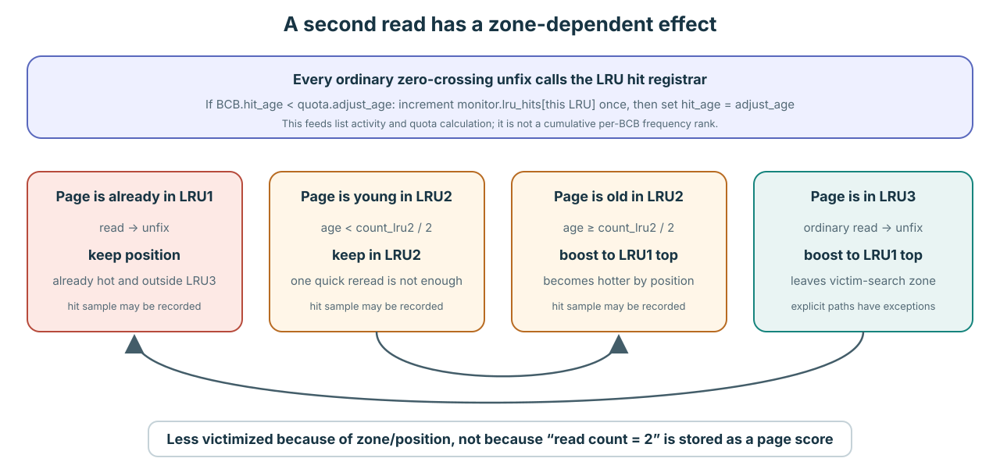

Policy는 candidate를 찾고 eligibility는 재사용을 허가한다
Replacement progress는 어디를 search할지, 누가 flush할지, allocator가 기다릴지, candidate가 어떻게 전달될지를 결정한다. 어느 선택도 Lesson 7의 hard gate를 약화하지 않는다. stable identity, owner/waiter conflict 없음, DIRTY/FLUSHING debt 없음, protected final revalidation이 모두 필요하다.
빠른 candidate hint와 direct reservation은 search 결과이지 frame rebind 허가가 아니다.
30초 mental model
- 세션 또는 vacuum worker가 private-LRU 번호를 빌린다.
- 실행 thread가 그 번호를
private_lru_index에 들고 다닌다. - BCB는 세션 owner가 아니라 현재 LRU index와 zone만 저장한다.
- Global
fcnt가 0이 되는 마지막 unfix에서만 ordinary placement/movement를 수행한다.
LRU는 pool 초기화 때 만들고, transaction은 private-list assignment만 빌린다

N개의 BCB/frame slot과 S + P개의 LRU object는 pool lifetime을 갖는다. Resident BCB는 첫 zero-crossing unfix 후에야 정확히 한 doubly-linked LRU에 연결된다.
- Startup:
pgbuf_initialize_bcb_table()이N = num_buffers개 BCB를next_BCB로 연결한다.invalid_top은 BCB 0을 가리키고invalid_cnt = N이다. Shared/private LRU object도 이미 존재하지만 top/bottom/boundary는 null이고 모든 count는 0이다. - 첫 miss: allocation이 invalid head를 O(1)에 pop하고 그 BCB/frame slot에 page를 읽은 뒤, fix된 동안은 VOID에 둔다. BCB와 frame은 pool lifetime 동안 같은 array-index pair다. 합법적으로 victimize된 뒤 그 pair 안의 page identity가 바뀐다.
- 첫 unfix-to-zero: pinned default AOUT-disabled path에서 private domain page는 그 private LRU1 top에, private domain이 없는 page는 shared LRU2 middle에 들어간다.
- Heavy pressure: invalid list가 0이 될 수 있다. Resident BCB는 LRU zone에 분포하고, dirty LRU3 page는 flush progress를 필요로 하며, clean eligible LRU3 page는 candidate로 advertise된다. Allocator는 search하거나 기다린다. 숨겨진 두 번째 BCB/frame 예비 pool은 없다.

“Private”는 locality/quota domain이다. Private frame pool도, 접근 격리도, BCB 소유권도 아니다.
Session 생성과 vacuum setup은 pgbuf_assign_private_lru()를 호출한다. 반환된 private-list-local 번호를 실행 thread의 private_lru_index로 복사한다. Assignment는 P개 private descriptor를 훑어 BCB가 가장 적은 idle list를 우선하고, 없으면 activity가 가장 낮은 list를 고른다. 여러 세션이 같은 private LRU를 사용할 수 있다.
세션이 해제되면 pgbuf_release_private_lru()가 session count를 줄인다. 이 release는 BCB를 비우거나 이동하지 않고 list를 파괴하지도 않는다. 따라서 list와 resident BCB는 assignment보다 오래 남을 수 있다. 다른 thread도 그 page를 fix할 수 있으며 BCB에는 이전 세션을 owner로 기록하는 필드가 없다.
Verified mechanism: BCB chain page_buffer.c:5590–5650, invalid-list initialization/pop 5907–5920,8923–8950, LRU array initialization 5744–5800, placement 6636–7040.
“Quota”는 placement와 search를 위한 움직이는 target이지 예약된 memory가 아니다
| 수량 | Pinned revision의 정확한 rule | 의미하지 않는 것 |
|---|---|---|
S: shared list | num_LRU_chains = 0이면 S = max(4, min(MAX_NTRANS, floor(N/1000)))이다. 명시값 상한은 1,000이다. | Active transaction마다 shared list 하나가 있다는 뜻이 아니다. |
P: private list | Server default num_private_chains = -1은 MAX_NTRANS + VACUUM_MAX_WORKER_COUNT가 된다. 0은 private quota disable, 1–3은 4가 된다. Stand-alone은 0이다. | Transaction마다 영구 독점 list가 있다는 뜻이 아니다. Assignment는 idle/least-active list를 골라 session count를 증가시킨다. |
| Pool 전체 private target | (N − invalid_cnt) × private_pages_ratio. Ratio는 private/shared LRU hit에서 구하고 1%–99.8%로 clamp하며 10초에 걸쳐 smoothing한다. | Hard capacity가 아니다. Resident count가 초과할 수 있다. |
Private quota Q 하나 | Private target × 해당 list의 activity share이며 5,000과 N/2 중 작은 값으로 cap한다. | Assigned context를 위해 미리 잡아 둔 memory가 아니다. |
| Private zone threshold | LRU1 = floor(0.05Q), LRU2 = floor(0.05Q). 오래된 초과분은 LRU3로 내려간다. | Q = N이 아닌 한 physical pool 전체의 5%/5%가 아니다. |
| Shared zone threshold | Shared target은 max((N − all_private_quota)/S, 50)이고 기본 LRU1/LRU2 비율은 40%/5%다. 나머지는 LRU3가 된다. | 개별 page에 대한 protection 보장이 아니다. |
Q = 1,000을 주면 LRU1 threshold는 50, LRU2 threshold도 50이다. 현재 resident BCB가 1,000개라면 adjustment 뒤 대략 900개 위치가 LRU3에 남는다. 현재 1,150개라 해도 quota가 150개를 거절하지 않는다. 다만 over quota가 되어 더 이른 victim source가 된다.Quota adjustment는 충분한 activity/time이 누적되지 않으면 일찍 return한다. 실제 실행되면 T개 thread-entry activity shard와 L = S + P개의 LRU descriptor를 순회하고, 현재 LRU1/LRU2 초과분을 demote할 수 있다. 따라서 구조적 비용은 O(1)이 아니라 O(T + L + D)다. 여기서 D는 그 adjustment가 demote한 node 수다.
Pinned policy: count와 initialization page_buffer.c:1071–1120,5744–5800,13942–14030, adjustment 14252–14511, parameter default system_parameter.c:1794–1829,3754–3777,4171–4182.
Fix는 현재 membership을 보호하고, 마지막 unfix는 이를 옮길 수 있다

Global fcnt가 0이 되고 ordinary path가 허용될 때만 movement가 일어난다. 마지막이 아닌 unfix는 BCB를 relink하지 않는다.
처음 load한 BCB는 fix 중에 VOID에 머문다. 마지막 unfix에서 AOUT-disabled path는 thread에 private assignment가 있으면 private LRU1 top, 없으면 shared LRU2 middle에 insert한다. 이미 shared인 BCB는 shared에 남고 zone rule에 따라 keep 또는 boost된다.
Private member에 대해 pgbuf_should_move_private_to_shared()는 unfix하는 thread의 private LRU가 BCB의 list와 다르면 이동을 요청한다. Private assignment가 없는 thread도 여기에 포함된다. 또는 같은 domain이라도 BCB가 hot하면서 old enough이면 이동한다. 인접 source comment는 첫 조건을 “more than one transaction”이라고 요약하지만 실제 검사는 domain-index mismatch다. BCB가 owner set을 역참조하는 구조가 아니다.
이동은 private → VOID → shared LRU2 middle 순서다. Private-list mutex 아래 unlink하고 그 mutex를 푼 뒤, shared-list mutex 하나를 잡아 link한다. 그 사이에도 caller가 BCB mutex를 계속 들고 있으므로 transient VOID는 보호되고 두 list mutex를 동시에 잡지 않는다. Known-node edit와 D개 zone demotion은 O(1 + D)다. Shared destination 선택은 amortized O(1)이지만 주기적으로 S개 shared descriptor를 훑으므로 shared placement/migration에는 O(S + D)인 periodic case가 있다. Mutex wait는 별도다.

Placement 뒤 각 doubly linked list는 제자리에서 세 zone으로 나뉜다. LRU1은 hot, LRU2는 buffer/boost, LRU3만 ordinary victim-scan zone이다.
| Mechanism | Pinned revision에서의 의미 | Evidence label |
|---|---|---|
| Private LRU와 shared LRU | 서로 대안인 resident domain이며 private list에는 context quota policy가 있다. | Implementation policy. |
| LRU1 / LRU2 / LRU3 | 이 revision의 hot, buffer/boost, victim-search zone이다. | Implementation policy. |
| Quota와 search order | over-quota context는 자기 list를 먼저 search하고, under-quota ownership은 이후 fallback까지 보호받는다. | Implementation policy. |
| Victim hint/count/queue | scan 작업을 줄이거나 candidate를 전달한다. | Verified mechanism이며 eligibility proof는 아니다. |
Pinned source: final-unfix dispatch와 migration predicate page_buffer.c:6636–7038, link/move helper 9695–10417, zone semantics 185–200, ordinary selection 9293–9538.
Transaction을 나열하지 않고 list index를 consume합니다

Candidate producer가 integer LRU index를 advertise합니다. Victimizer는 선택한 list 하나만 lock하고 bounded LRU3 state를 scan하며 BCB try-lock을 사용합니다.
- Eligible clean LRU3 BCB가
count_vict_cand를 증가시킵니다. Over-quota private list는 자신의 index를private_lrus_with_victims에 atomic enlist하고, quota adjustment도 이를 다시 publish할 수 있습니다. pgbuf_lfcq_get_victim_from_private_lru()는big_private_lrus_with_victims를 먼저 consume한 뒤 허용될 때 regular queue를 사용합니다. Integer를 곧바로buf_LRU_list[lru_idx]에 mapping하므로 caller가 다른 transaction object를 순회하지 않습니다.pgbuf_get_victim_from_lru_list()는 해당 LRU mutex 하나를 lock하고 LRU3 entry를 최대 1,000개 scan하며 최종 safety recheck 전에 각 BCB를 try-lock합니다.- Candidate와 quota가 다음 search를 정당화하면 index를 requeue합니다. 아니면 enlistment flag를 clear하여 이후 candidate가 다시 advertise할 수 있게 합니다.
pgbuf_assign_private_lru()는 P개 private-list descriptor를 선형 검사한다. 한 attempt는 O(P)이고 assignment race 뒤 최대 다섯 번 retry한다.| BCB state/event | Pinned placement 또는 movement | Quota 관계 |
|---|---|---|
| New private BCB, default AOUT disabled | 첫 zero-crossing unfix가 LRU1 top에 insert합니다. | Private LRU1 target은 현재 quota의 5%입니다. |
| Private domain이 없는 new BCB | Shared LRU2 middle에 insert합니다. | Shared 기본 LRU1/LRU2 target은 shared target의 40%/5%입니다. |
| LRU1 ordinary unfix | 이미 hot하므로 유지하고 boost하지 않습니다. | Threshold 초과분의 가장 오래된 edge가 LRU2로 demote됩니다. |
| LRU2 ordinary unfix | 충분히 old일 때만 LRU1으로 boost합니다. | Threshold 초과분의 가장 오래된 edge가 LRU3로 demote됩니다. |
| LRU3 ordinary unfix | LRU1으로 boost하며 vacuum/direct path에는 명시적 예외가 있습니다. | Clean hard-eligible entry는 victim이 될 수 있습니다. |
| 다른 private context가 사용했거나 hot하고 충분히 old인 private page | VOID로 remove한 뒤 shared LRU2 middle에 add합니다. | Membership이 이동할 뿐 quota가 BCB를 복제하지 않습니다. |
Verified mechanism과 pinned policy: queue advertisement/consumption은 page_buffer.c:15674–15728,16370–16506, bounded list scan은 9330–9538, placement/aging은 6636–7040,9695–10353, quota는 14251–14511에 있습니다.
Reuse는 조건에 따라 zone/position을 바꾸지만 “frequency = 2”를 저장하지 않는다

중요한 event는 BCB fix count를 다시 0으로 만드는 ordinary unfix다. 현재 zone과 age가 movement를 결정한다.
quota.adjust_age는 elapsed time이 아니라 epoch 번호다. 0에서 시작하고, 오직 실제로 실행된 pgbuf_adjust_quotas() pass만 adjust_age를 증가시킨다. Maintenance daemon은 100 ms마다 함수를 호출하고 assignment/release도 호출할 수 있지만 quota-disabled, already-adjusting, 1 ms 미만, 500 ms 이전 low-activity gate에서 return하면 증가하지 않는다. 즉 epoch이 무조건 100 ms마다 증가하는 것은 아니다.
Ordinary 마지막 unfix에서 pgbuf_bcb_register_hit_for_lru()는 BCB 하나를 epoch 하나당 최대 hit 하나로 센다. bcb->hit_age < quota.adjust_age이면 monitor.lru_hits[current_lru]를 증가시키고 현재 epoch을 BCB에 복사한다. 다음 accepted adjustment는 ATOMIC_TAS_32로 각 list counter를 가져오면서 0으로 만들고, hits/second와 smoothed activity를 계산해 quota를 갱신한다. 이는 sample de-duplication이지 per-page frequency rank가 아니다. BCB가 방금 private → shared로 이동했다면 새 shared list의 hit로 기록된다.
두 번째 독립 signal은 count_fix_and_avoid_dealloc의 상위 절반이다. General fix path가 이 approximate hotness counter를 64까지 증가시키지만 overlapping-reader fast path는 registration을 건너뛴다. 따라서 정확한 successful-read count가 아니다. 64 도달은 old private-to-shared migration rule에만 참여하며 LRU3 victim scan이 비교하는 score가 아니다. BCB가 invalid list로 돌아가면 reset된다.
| 두 번째 unfix 시 BCB 위치 | Movement | Victim 효과 |
|---|---|---|
| LRU1 | 현재 position을 유지하고 조건이 맞으면 list activity를 기록한다. | 이미 victim zone 밖이므로 추가 boost가 필요 없다. |
| LRU2, 너무 young | LRU2에 남는다. “Old enough”는 list tick 차이가 현재 LRU2 count 절반 이상이라는 뜻이다. | 즉시 다시 읽었다고 자동으로 LRU1 protection을 받지는 않는다. |
| LRU2, old enough | Remove한 뒤 LRU1 top에 add한다. | 다시 zone을 거쳐 age해야 하므로 선택 가능성이 낮아진다. |
| LRU3, ordinary path | LRU1 top으로 boost한다. | 유일한 ordinary victim-scan zone을 벗어난다. |
짧게 답하면 경우에 따라 그렇다. 이후 read는 position/zone을 통해 page를 덜 victimizable하게 만들 수 있고, hit는 containing private LRU의 미래 quota에도 영향을 줄 수 있다. 그러나 young LRU2 page를 빠르게 두 번 읽으면 placement가 그대로일 수 있다. AOUT은 ghost-history behavior를 추가할 수 있지만 분석한 default는 ratio를 0으로 강제한다.
Accepted maintenance pass의 비용을 T = 확인하는 thread entry 수, L = LRU descriptor 수, D = 새 threshold 때문에 demote한 node 수로 두면 O(T + L + D)다. Thread counter scan, all-LRU hit/quota pass, 실제 demotion을 각각 포함한다.
Verified mechanism과 pinned policy: epoch initialization/producer page_buffer.c:13942–13985,14251–14511, 100-ms caller 16994–17009,17146–17161, hit registration 16595–16610, movement/later-read behavior 6730–7038,10210–10360,16313–16367.
Array scan, list walk, pointer edit, I/O를 구분한다
| Operation | 실제로 건드리는 structure | 시간 |
|---|---|---|
| Pool initialization | BCB/frame array와 L = S + P LRU descriptor | O(N + L) |
| Invalid-list pop/push | 한 mutex 아래 singly linked head | O(1) |
| Private-LRU assignment | P개 private descriptor array와 optional retry | Attempt당 O(P), 이 loop의 총 attempt는 최대 6회 |
pgbuf_bcb_register_hit_for_lru() | BCB epoch 하나와 현재-LRU counter | 구조적 O(1) |
pgbuf_should_move_private_to_shared() | List index, hotness, list-age field | O(1) |
| Known BCB의 LRU add/remove/boost | Doubly linked neighbor와 boundary/count field | Zone adjustment를 빼면 O(1) |
pgbuf_get_shared_lru_index_for_add() | Atomic round-robin과 periodic all-S rebalance sample | Amortized O(1), periodic O(S) |
| 마지막 unfix의 shared placement 또는 private → shared | BCB mutex를 유지하며 shared 선택과 known-list edit | Amortized O(1 + D), periodic O(S + D) |
| Resident ordinary fix | Hash chain H와 현재 thread의 R-holder list | Latch wait를 빼면 O(H + R) |
| Ordinary unfix bookkeeping | Holder lookup/removal, W waiter wake scan, 이후 possible LRU work | O(R + W) + placement/zone work |
| Zone adjustment | Oldest LRU1/LRU2 node를 하나씩 demote | D개 demotion에 O(D) |
| LRU index advertise/consume | Bounded lock-free circular queue | P/S traversal은 없지만 CAS retry 때문에 wall-clock cost는 contention-dependent |
| List 하나의 victim attempt | 선택된 doubly linked LRU3를 뒤에서 앞으로 walk | O(min(Z3, 1,000)); BCB lock은 try-lock |
| 실행된 quota adjustment | T개 thread counter, 모든 L descriptor, demote되는 node | O(T + L + D) |
| Flush 또는 page load | Metadata 외에 storage/log/DWB path | Latency-bound I/O이므로 O(1)이라 부르지 않는다 |
Space: pool 소유 BCB와 frame은 O(N), LRU descriptor와 hit/activity array 및 victim-index queue는 O(L), private session counter는 O(P)다. List node는 BCB 자체이므로 LRU membership을 위해 별도 O(N) node array를 할당하지 않는다.
Verified structure에서 유도한 complexity: page_buffer.c:499–773,5590–5920,9330–9538,9695–10415,14252–14650,16370–16567. 별도 표시가 없으면 Big-O는 mutex contention과 I/O latency를 제외한다.
allocator는 exit가 명확한 progress loop에 들어간다

- invalid/free BCB 가져오기: 즉시 재사용할 storage다. resident mapping에 대한 flush나 victim proof가 필요 없다.
- LRU search: pinned private/shared/quota 순서를 따른다. 선택한 모든 resident candidate는 여전히 protected eligibility를 통과해야 한다.
- direct victim 기다리기: flush daemon이 있는 server mode라면 allocator를 enqueue하고 producer를 깨운 뒤 bounded/interrupt-aware wait로 sleep한다.
- assignment revalidate: 할당된 BCB를 lock한다. worker가 다시 fix했다면 reservation을 revoke하고 보통 더 높은 priority로 retry한다.
- daemon 없음: stand-alone/recovery 조건에서는 동기식으로 flush하고 다시 search한다.
- 종료: frame을 반환하거나 retry하고, interrupt/timeout을 보고하거나 명시적인 no-buffer error를 낸다. 실패 시 page pointer는 반환하지 않는다.
Verified mechanism: allocation loop은 page_buffer.c:8181–8403, victim search order는 9067–9265, direct-victim consumption/revocation은 15592–15660이다.
새 ownership이 생기면 reservation은 물러난다
producer는 기다리는 allocator를 위해 eligible BCB를 reserve할 수 있다. assignment와 consumption 사이에 다른 active worker가 resident page를 fix할 수 있으며, 이 새 ownership은 reservation을 무효로 만든다.
| 시점 | 사실 | allocator가 할 수 있는 일 |
|---|---|---|
| Producer가 assign | producer의 protected check 시점에는 candidate가 eligible했다. | reservation과 함께 waiter를 깨운다. |
| consumption 전 worker가 fix | candidate에 ownership이 생겨 재사용이 안전하지 않다. | direct assignment를 mark/revoke한다. |
| Allocator가 consume | protected revalidation이 invalid assignment를 감지한다. | reservation state를 release하고 다른 candidate를 요청한다. |
재사용을 강제하면 fix contract를 위반한다. retry는 correctness의 낭비가 아니라 더 새롭고 강한 사실을 존중하는 mechanism이다.
old-generation completion은 G+1을 victim으로 만들 수 없다
pressure 상황에서 victim flush는 copy된 generation G를 전파하고 BCB를 post-flush assignment로 넘길 수 있다. Post-flush는 resident page가 여전히 clean, unfixed, victim zone, policy-eligible 상태인지 다시 확인해야 한다.
G가 in flight인 동안 writer가 DIRTY generation G+1을 만들었다면 direct-victim handoff는 실패해야 한다. 과거 byte를 완료했다고 더 새로운 resident byte를 버릴 권한이 생기지는 않는다.
Verified mechanism: flush handoff는 page_buffer.c:10925–10952, post-flush assignment는 15489–15556이다.
bounded exit가 곧 starvation freedom은 아니다
| Source가 뒷받침하는 것 | Source/runtime이 입증하지 못한 것 |
|---|---|
| 구체적인 search, wait, retry, timeout, interrupt, error branch. | 성공 전 revocation/retry 횟수의 상한. |
| pinned revision의 maintenance, page-flush, post-flush, flush-control daemon ownership. | 안정적인 cadence, priority, batch size 또는 target-branch formula. |
| AOUT structure와 code가 존재한다. | 현재/default 동작이 2Q를 사용한다는 것. 분석한 pinned default는 ratio를 0으로 강제한다. |
| 기존 workload가 reuse/counter를 관찰했다. | 실제 eviction, victim order, direct assignment, daemon timing, fairness. physical victim을 유발하지 못했다. |
revoke된 assignment가 도달할 수 있는 legal exit를 trace한다
문제
under-quota thread에 BCB가 필요하다. invalid list는 비었고 모든 scan이 실패하여 direct victim을 기다린다. candidate를 assign받았지만 consumption 전에 다른 worker가 fix했고, 다음 wait는 timeout된다.
과제: 모든 protected decision과 최종 결과를 trace하고 mechanism과 policy를 구분하라. 이것이 infinite wait도 starvation freedom도 증명하지 않는 이유를 정확히 설명하라.
답을 chat에 붙여 넣어 보자. eligibility/policy 구분, revocation, exit, liveness 표현을 확인한 뒤 Advanced 진도를 기록한다.
allocation의 모든 terminal edge를 표시한다
pinned page_buffer.c:8181–8403과 15592–15660의 direct-victim consumption을 함께 읽어라. success, retry, revocation, interrupt, timeout, no-daemon, explicit-error 결과를 표시하자.